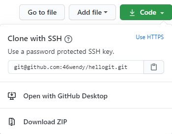

모든 프로젝트 폴더 download
폴더를 다운받을 경로로 이동하기
git clone 복사한주소붙여넣기

Clone with HTTPS 속도가 많이 느리므로 Clone with SSH 이용!
Use a password protected SSH key 하위의 주소를 통째로 복사한다
업로드 준비 : commit
git add --all
git commit -m "생성 및 수정된 파일에 관한 코멘트 달기"
업로드 : push
git push origin master
추가및 수정 파일 다운로드 : pull
git pull origin master